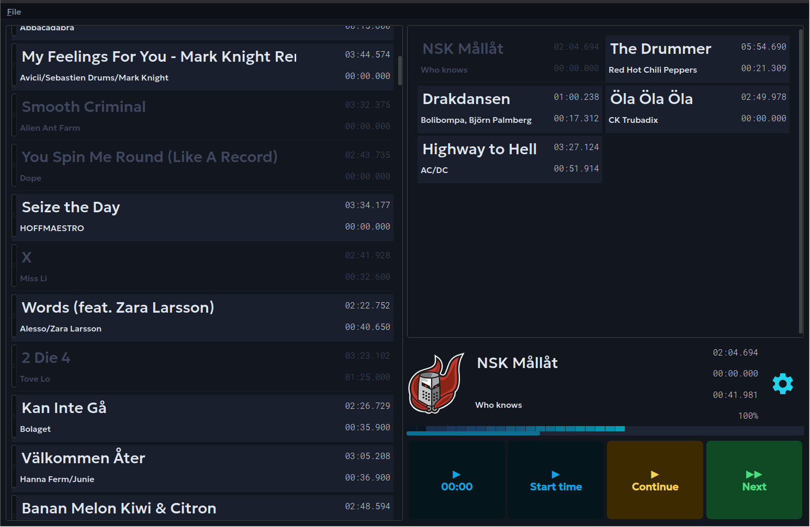
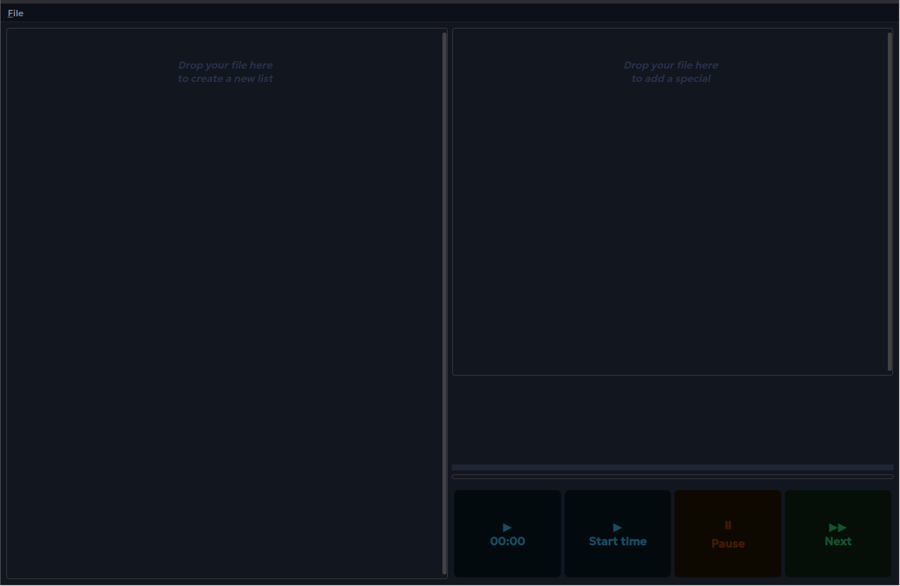
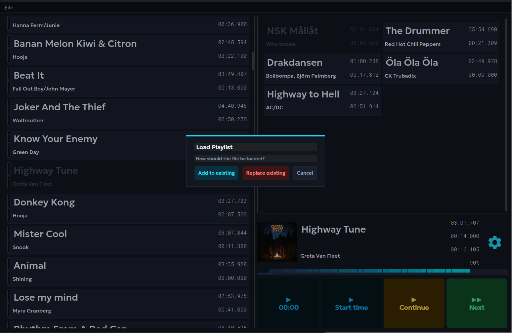
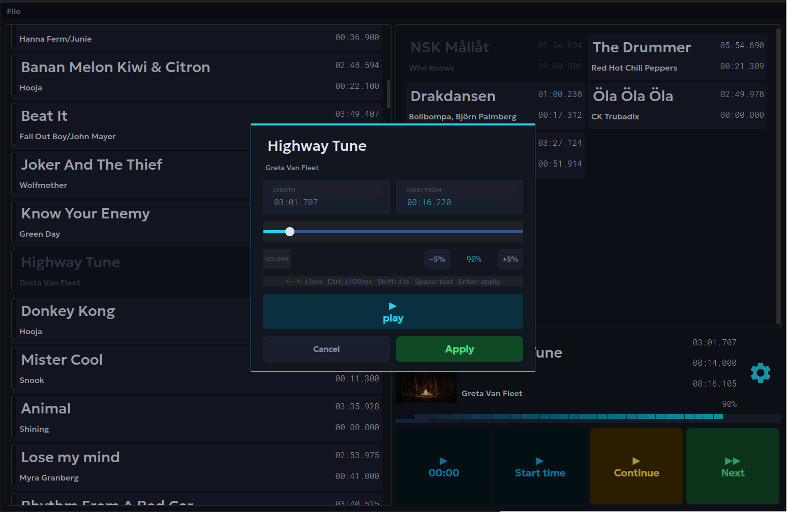

Free & Open Source
Hockipy is a live-event music player built for precision. Two independent queues, per-song start times, instant specials — so the right track plays at the right second, every time.

What it does
Hockipy is not a general-purpose media player. It solves one job well: running a carefully prepared playlist in front of a crowd, with instant access to specials and millisecond-accurate start points.
How it works
The window is split into two independent panels. The left panel is your main playlist — songs play top-to-bottom, dimming as each one is used. The right panel holds your specials: goal music, jingles, or any track you need to fire instantly without disturbing the queue.
On first launch both panels show a drop target. Drag any supported audio file from your file manager onto the left panel to start a playlist, or onto the right panel to add a special. The app reads the title, artist, length, and album art from the file's tags automatically.

Playlists are saved as portable .hpy spec files. Use File → Load Spec to open one. If songs are already loaded you can choose to merge the incoming list with the existing one, or replace it entirely.

Click the ⚙ cog icon on the now-playing display to open the song settings. Here you set the exact millisecond the track starts from and adjust its individual volume. A test-play button lets you hear the result before committing.

Get Hockipy
No installer. No admin rights. Unzip the folder and run the executable — everything is bundled.
hockipy-linux.zipunzip hockipy-linux.zipchmod +x hockipy-linux/hockipy./hockipy-linux/hockipyffmpeg. Install it with your package manager: sudo apt install ffmpeg. All other dependencies are bundled.
hockipy-windows.ziphockipy.exeffmpeg.exe is bundled — no extra installs required.
Help & Reference
.mp3 .ogg .wav .flac.mm:ss.mmm format..hpy JSON playlist file. You are asked whether to merge with the current session or replace it entirely..hpy file. Album art is not stored in the file — it is re-read from the audio files on load. Becomes the active file for subsequent Save actions.~/.hpy (Linux/macOS) or %USERPROFILE%\.hpy (Windows) after every change. This file is loaded on the next launch.Open Source
Hockipy is distributed under the GNU General Public License version 3. This means you are free to run, study, modify, and redistribute the software — provided that any distributed version carries the same license and makes the source available.
The GPL-3 license was chosen because Hockipy links PyQt6, which Riverbank Computing distributes under GPL-3-only. Any application that links PyQt6 under the free license must itself be GPL-3 compatible.
Source code is available at github.com/svenakela/hockipy. Issues and pull requests are welcome.
If Hockipy has saved you from an awkward silence or a missed goal celebration, consider buying the developer a coffee. It takes five seconds and means a lot.
Buy me a coffee